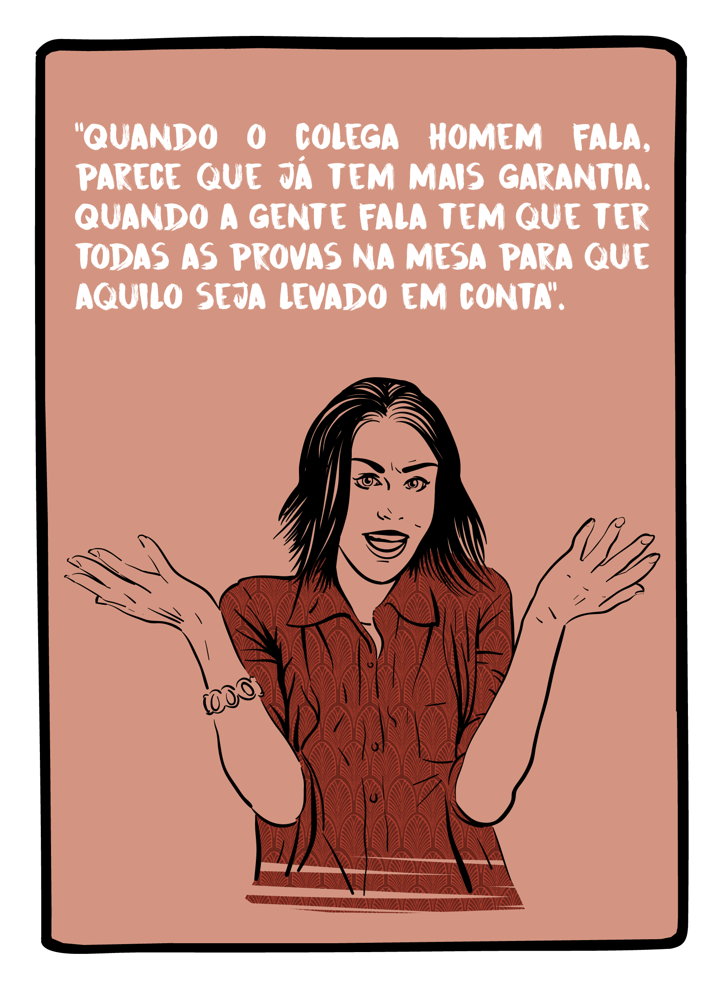
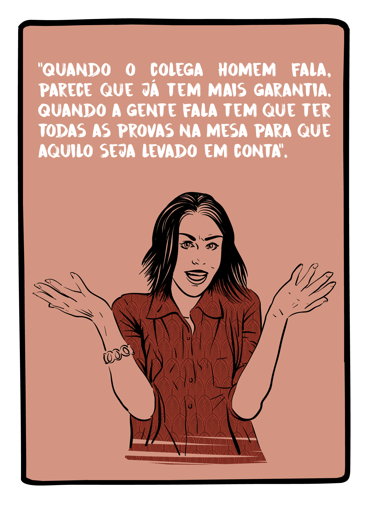

A Associação Brasileira de Jornalismo Investigativo (Abraji) e a Gênero e Número realizaram uma pesquisa inédita no Brasil, com o apoio do Google News Lab, para investigar os desafios enfrentados pelas mulheres no exercício da profissão jornalística.
Identificar a situação das jornalistas nas redações, os tipos de assédio e violência que enfrentam em suas rotinas de trabalho e como respondem a eles, suas posições hierárquicas e o modo como enxergam a perspectiva de gênero nas coberturas é essencial para compreender o papel da mídia - interna e externamente - nas assimetrias de gênero.
 


A pesquisa “Gênero no Jornalismo Brasileiro” aplicou métodos qualitativos e quantitativos, observando como se dão as relações de gênero dentro do ambiente das redações.
Na fase qualitativa, foram realizados grupos focais em Brasília, Porto Alegre, Rio de Janeiro e São Paulo com 42 jornalistas. Ao longo das conversas, as participantes falaram sobre cinco eixos temáticos dentro da questão de gênero e trabalho:
Com os pontos levantados pelas respondentes, o questionamento que ficou foi: o resultado adquirido nos grupos se aplica a um conjunto maior? A partir disso, a pesquisa quantitativa foi de grande importância, pois permitiu que os resultados obtidos nos grupos focais pudessem se tornar algo mais amplo. Foi desenvolvido, a partir dos grupos, um questionário online mais abrangente que pudesse alcançar o maior número de mulheres possível. O questionário ficou no ar de 26 de junho a 28 de agosto de 2017 e obtivemos respostas válidas de 477 mulheres que atuam em 271 veículos diferentes.
Baixe o PDF do estudo
73 %
das jornalistas que responderam à pesquisa afirmam já ter escutado comentários ou piadas de natureza sexual sobre mulheres no seu ambiente de trabalho
92,3 %
das jornalistas que responderam a pesquisa afirmaram ter ouvido piadas machistas em seu ambiente de trabalho
46 %
das jornalistas que responderam a pesquisa apontaram que as empresas onde trabalham
não possuem canais para receber denúncias de assédio e discriminação de gênero
64
%
das jornalistas que responderam a pesquisa
já sofreram abuso de poder ou autoridade de chefes ou fontes
Das jornalistas que responderam a pesquisa
83,6 %
já sofreram algum tipo de violência psicológica nas redações
70,4 %
das jornalistas que responderam a pesquisa admitiram já terem recebido cantadas que as deixaram desconfortáveis no exercício da profissão
70,2 %
das jornalistas que responderam a pesquisa afirmaram que já presenciaram ou tomaram conhecimento de uma colega sendo assediada em seu ambiente de trabalho
59 %
das jornalistas que responderam a pesquisa presenciaram ou tomaram conhecimento de uma colega sendo assediadano exercício de sua profissão por uma fonte
75,3 %
das jornalistas que responderam a pesquisa admitiram já ter ouvido, no exercício do trabalho, um comentário ou elogio sobre suas roupas, corpo ou aparência que as deixaram desconfortáveis
Os resultados da pesquisa mostram que há um longo caminho a percorrer para que a igualdade de gênero se estabeleça no jornalismo profissional. Algumas recomendações simples podem acelerar a transição para um período de justiça com todas as repórteres, editoras e trabalhadoras da imprensa brasileira:
Coordenação de pesquisa:
Natália Mazotte e Verônica Toste
Consultoria executiva:
Maiá Menezes, Alana Rizzo e Thiago Herdy
Pesquisadora principal:
Verônica Toste
Pesquisadoras assistentes:
Andressa Cabral e Fernanda Távora
Gerência do projeto:
Guilherme Alpendre
Webdesign, infografias e animações
Mariana Santos, Inês Barracha, Rui Freitas, João Erbetta & Victor Abarca
Tem alguma sugestão para aprimorar a pesquisa em próximas edições ou quer nos ajudar a divulgar os resultados e ampliar o debate? Conta pra gente: